1.스팅 온라인
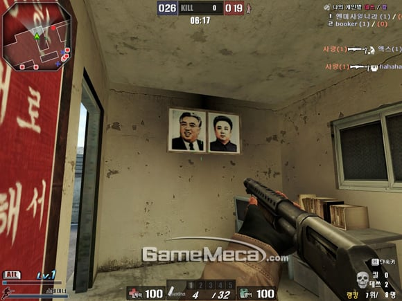
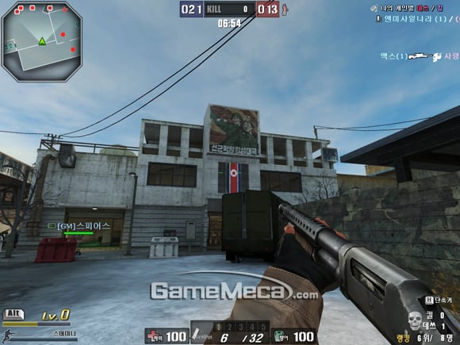
2008년 한국 YNK게임즈에서 개발한 스팅 온라인이라는 게임이다.
그때 당시 카스:소스에 사용했던 소스 엔진으로 개발했던 게임인데 여과없이 돼지새끼 일가 영정사진 북한맵이 등장했다.
2011년 서비스 종료되었는데, 생각보단 재미있었던 기억이 있음
물론 북한뿐 아니라 미국 러시아 대만 일본같은 국가의 맵들도 많았음.
2.콜오브듀티 : 어드밴스드 워페어
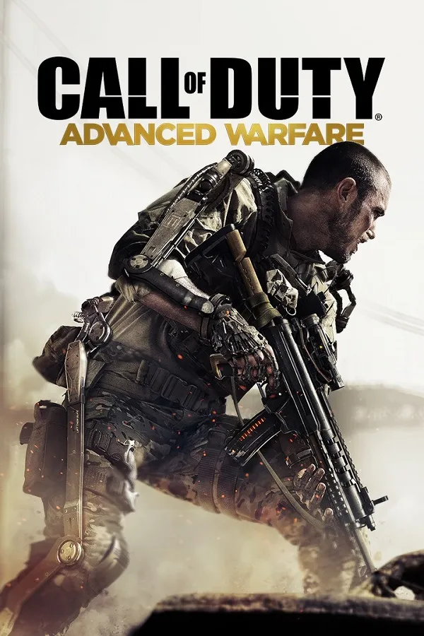
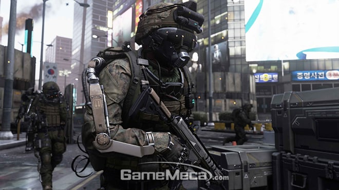
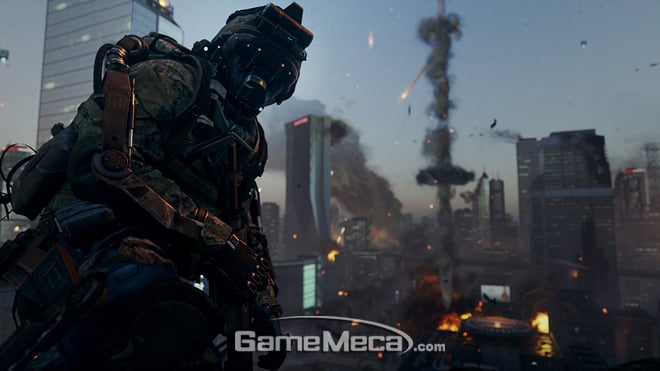
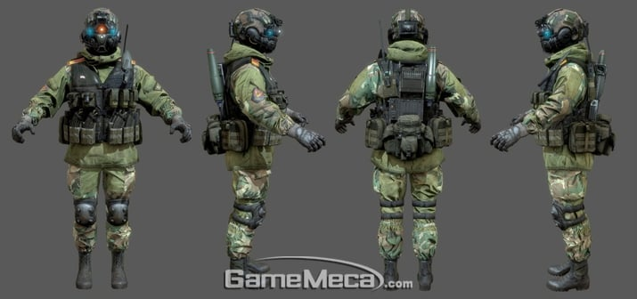
등장하는 북한군의 무장상태
의외로 북한군이 등장한 콜오브듀티 시리즈의 최초는 이 시리즈임.
2014년 출시한 슬래지해머 게임즈 개발의 콜오브듀티 어드밴스드 워페어
2054년이 배경이되며 첫번째 미션에서 북괴군이 서울을 침공하여 미군 공수부대가 강하하여 수복작전을 진행 함
해당 작전 중 초기업 총수의 아들이 사망하며 스토리가 시작됨.
그 이후로 북한이 등장하거나 그러진 않음
3.크라이시스
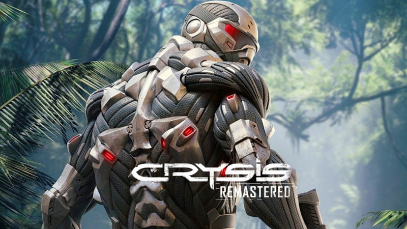
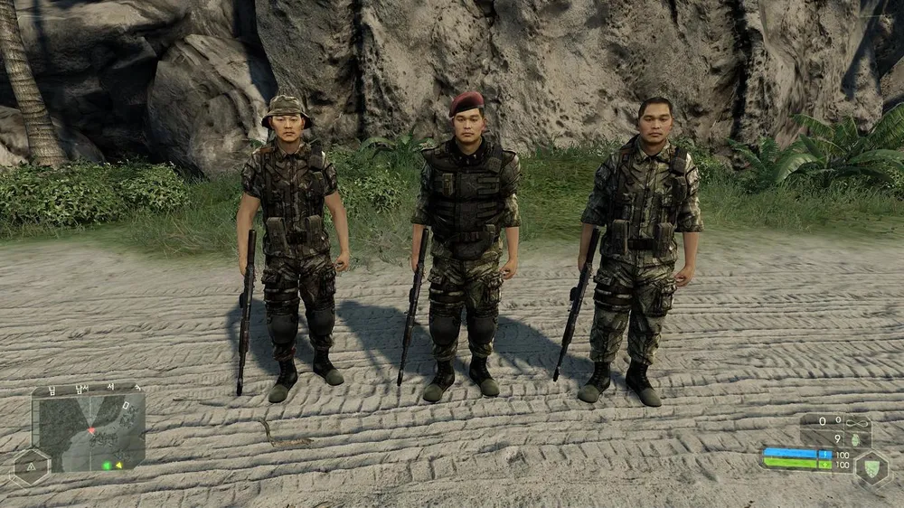
2008년 출시 한 컴퓨터 전투력 측정기 크라이텍 개발의 crysis다.
필리핀해에 위치한 한 섬에 북한군 활동이 감지되어 첨단 나노슈트를 입은 특수부대가 조사차 파견되고,
북한군이 외계 함선을 발견해서 뜯어보려는 시도를 한다는 설정이다. 사실 개발 초기에는 북한군이 아닌 중국군이였다는 얘기가 있는데 출시는 북한군으로 나옴. 북한군의 어색한 말이 밈으로 쓰이기도 하고있음 (적이다!, 으아 내눈! 아 내눈~,뭐였지? 등)
4.홈프론트
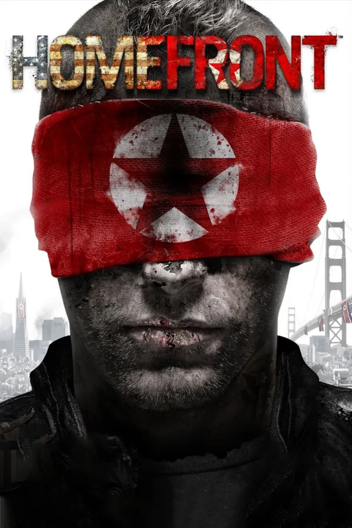
스토리가 너무 급발진 하는 게임이긴한데, 통일 대한민국이 동아시아를 모조리 흡수한 뒤 미국을 침공했다는 괴랄한 스토리임
미국을 점령 한 북괴군들에게서 나라를 되찾는 게임인데 걍 어이가 없음 ㄹㅇ ㅋㅋㅋㅋ
5.배틀필드4 프로파간다 맵
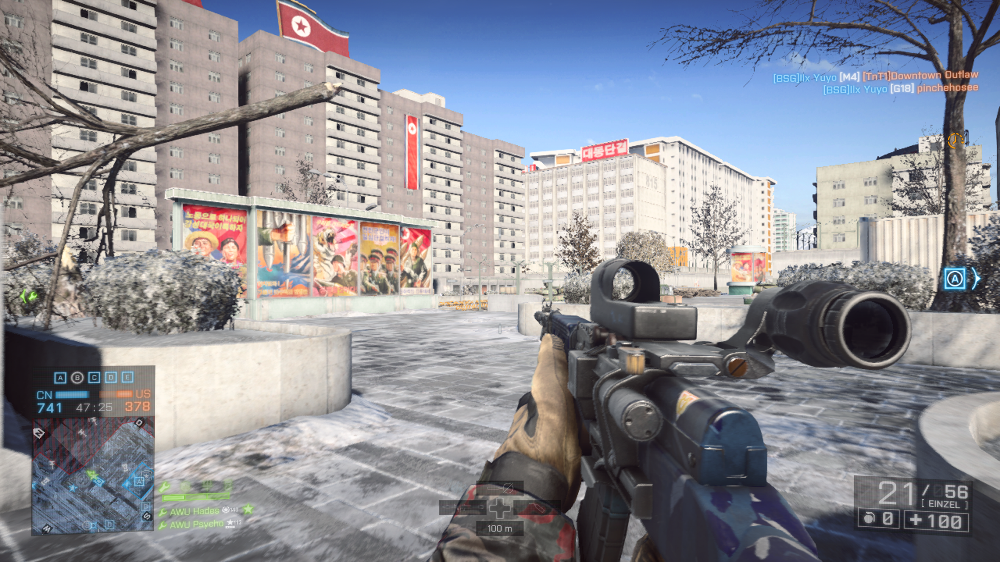
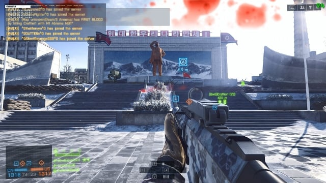
보시다 시피 평양 한복판에서 전투를 함, 배틀필드4는 미군 VS 중국군이라 그럴만도 함
돼지새끼 동상 철거 등 많은것이 가능함.
6.월드워3
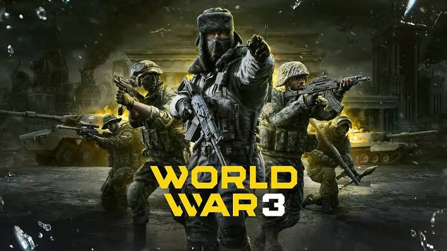
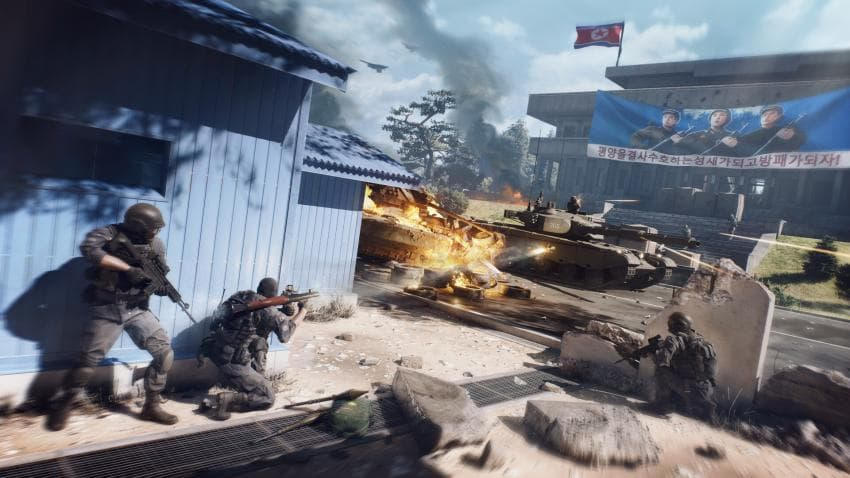
2022년 출시한 월드워3이라는 게임인데 추가 된 맵 중 jsa 에서 전투하는 판문점 맵이 등장함.
북괴 돼지새끼 일가 씨발년놈들 다 죽어도 싸다.
https://www.dogdrip.net/246384322
배필4는 탈북자가 플레이한것도 짤 많이 돌아다녔음 ㅋㅋ